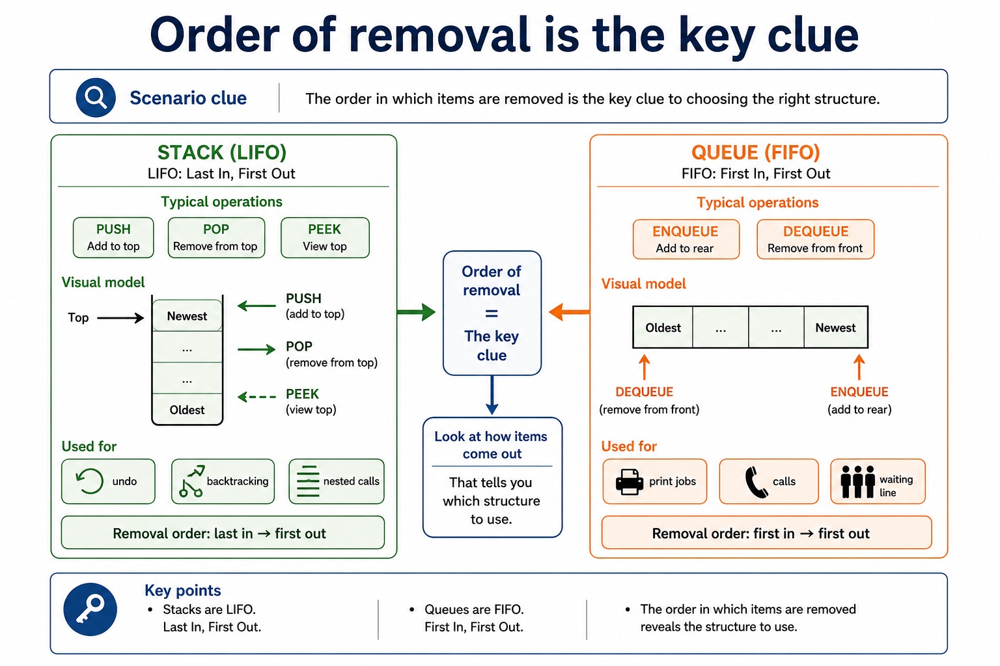
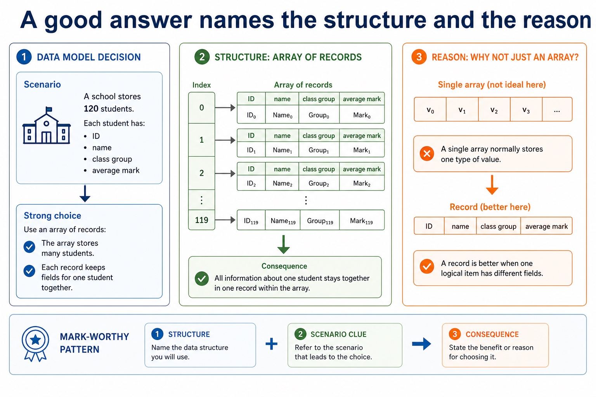
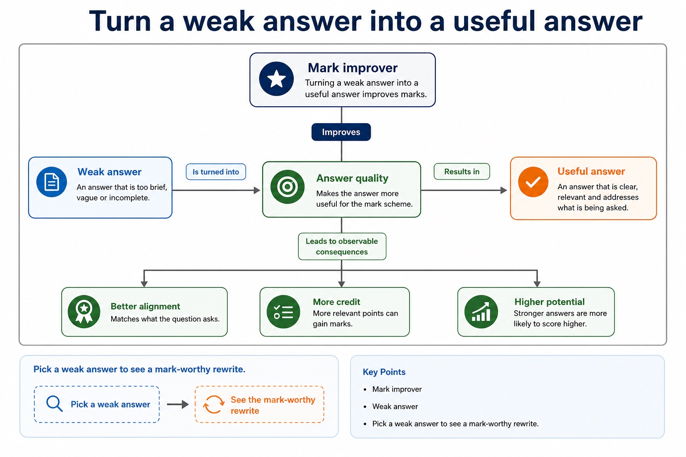
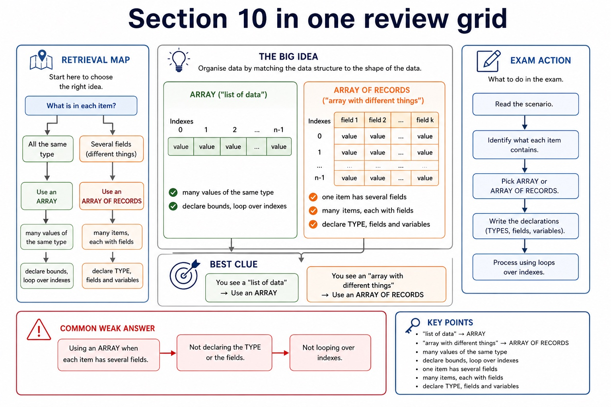
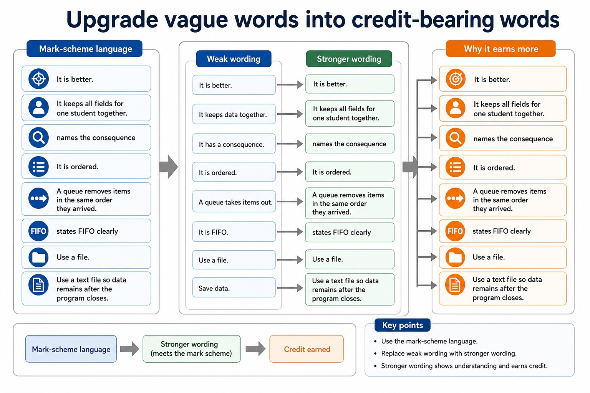

Cambridge AS9618 | Paper 2 | Section 10: Data types and structures
Linear search using arrays
Flexible-depth lesson
S10.06 | Learn from the diagrams, test the method, then choose the practice you need.
Choose a Quick, Full or Deep route
Quick route
Use the diagnostic, learning objectives, first worked example and foundation question. Stop once the learner can explain the central distinction accurately.
Full route
Use every knowledge-point material set, the worked method, the terminology check and all questions.
Deep route
Add the prerequisite refresher, ask learners to connect the concept checklist, discuss the labelled extension and complete a transfer question without a model answer.
Part 1 | optional depth
Prerequisite knowledge and quick diagnostic
Recall S10.03 before starting this lesson.
Give one accurate definition or method step before continuing. If it is missing, revisit only that prerequisite.
Open optional prerequisite refresher
Use the technical terms associated with arrays, including index, lower bound and upper bound. Bounds define the inclusive valid index range and an index selects one element.
Understand array, index, lower bound and upper bound terminology.
Part 2 | knowledge-point material sets
Learn each point through visuals
Follow the map, the three-part explanation and the concrete cue. Open precise wording only after the idea is clear.
Open the concept checklist and choose what to teach
bubble sort
linear search
write
01
S10.06 · process
Bubble sort · Linear search · Write
Concept map
bubble sortlinear searchwrite
See how it works
StartA trace alone is not sufficient evidence of the ability to write each complete algorithm
ChangeWhen processing array data, candidates must write a bubble-sort algorithm and a linear-search algorithm
CheckCandidates must be able to write a bubble sort and a linear search algorithm, not only describe or trace an existing algorithm
S10.06 diagrams
1 / 3
01
Comparison · 1 of 3
Why bubble sort repeats adjacent comparisons
Open text transcript
Bubble sort compares adjacent items and swaps an inverted pair.
For [1, 4, 2, 5, 8], pass 2 makes one swap: 4 and 2.
The resulting list is [1, 2, 4, 5, 8], and the next pass makes zero swaps.
02
Diagram · 2 of 3
Implement stack, queue and linked list using arrays
Open text transcript
An array stack uses Top; a queue uses Front and Rear; a linked list uses Data, Next, Start and a free list.
Add/delete preserve stack LIFO, queue FIFO and linked-list links; edit changes stored data without corrupting structure.
Candidates are not required to write pseudocode for these ADT operations; understand add, edit, delete and array implementation.
03
Comparison · 3 of 3
Linear search checks each item in order
Open text transcript
Knowledge explanation
How it works
Start at the first item. Compare it with the target. If it matches, stop. If not, move to the next item until found or the list ends.
When it is suitable
Use it when data is unsorted, the list is small, or simplicity matters more than speed.
Worst case: the target is last or absent, so every item may be checked.
Open precise syllabus wording
Write bubble sort and linear search algorithms.
When processing array data, candidates must write a bubble-sort algorithm and a linear-search algorithm. A trace alone is not sufficient evidence of the ability to write each complete algorithm.
Supporting diagram library
1 / 19
01
Diagram · 1 of 19
Increment only when a condition is true
Open text transcript
Initialise PassCount to zero before traversing five scores.
Increment PassCount only when the current score is at least 50.
Close the selection with ENDIF before NEXT Index.
Output PassCount after the loop.
02
Diagram · 2 of 19
Four array algorithm patterns
Open text transcript
Pattern map
Question wording
Core idea
Key variable
Traversal
output all, process each
visit every valid index
increase, replace, apply discount
03
Diagram · 3 of 19
Same algorithm, different array syntax
Open text transcript
Both pseudocode and Java versions visit five score positions.
Increment the pass counter only when the current score is at least 50.
Close the conditional before advancing the loop.
Both complete versions output the final pass count after the loop.
04
Diagram · 4 of 19
Use a flag to remember whether the target appeared
Open text transcript
Initialise Found to FALSE before traversing the names.
Set Found to TRUE only when the current name equals TargetName.
Close the match selection with ENDIF before NEXT Index.
Output Found after the traversal.
05
Diagram · 5 of 19
Choose a scenario and inspect the matching template
Open text transcript
Interactive pattern selector
Scenario
Choose a scenario to see the algorithm pattern.
06
Diagram · 6 of 19
Visit every element once
Open text transcript
Traversal
FOR Index <- 1 TO 5
OUTPUT Scores[Index]
NEXT Index
Traversal is the skeleton. Update, search and count usually add logic inside this skeleton.
07
Diagram · 7 of 19
Change selected elements
Open text transcript
Traverse the array with a FOR loop so Index is defined for every access.
Place the conditional update inside the traversal.
FOR Index <- 1 TO 10
08
Diagram · 8 of 19
Use the field name, not a numeric index
Open text transcript
Access and update
Pseudocode
Read field
OUTPUT Student1.Name
outputs the Name field
Update field
Student1.Mark <- 80
changes only the Mark field
09
Diagram · 9 of 19
Same type and index, or mixed fields and names?
Open text transcript
Array vs record
Elements / fields
usually same type
can be different types
index: Scores[3]
field name: Student1.Mark
Best for
many similar values
10
Diagram · 10 of 19
Composite data groups fields into one type
Open text transcript
a composite structure containing named fields
TStudent
one named item inside a record
Name , Mark
Composite data
data made from several components
student details grouped together
Dot notation
11
Diagram · 11 of 19
Read one field from a record
Open text transcript
Interactive field lookup
Student1 has Name, DateOfBirth, Mark and Enrolled fields.
12
Diagram · 12 of 19
Same modelling idea, different syntax
Open text transcript
TYPE TBook
Book fields are declared inside the TYPE block.
DECLARE Book1 : TBook
13
Diagram · 13 of 19
Order of removal is the key clue

Open text transcript
Stack and queue review
Typical operations
Scenario clue
LIFO: Last In, First Out
PUSH, POP, PEEK
undo, backtracking, nested calls
FIFO: First In, First Out
ENQUEUE, DEQUEUE
14
Diagram · 14 of 19
A good answer names the structure and the reason

Open text transcript
Data model decision
Scenario
A school stores 120 students. Each student has an ID, name, class group and average mark.
Strong choice
Use an array of records: the array stores many students; each record keeps fields for one student together.
Why not just an array?
A single array normally stores one type of value. A record is better when one logical item has different fields.
File storage preserves data between program runs and is separate from record-type syntax.
17
Diagram · 17 of 19
Turn a weak answer into a useful answer

Open text transcript
Mark improver
Weak answer
Pick a weak answer to see a mark-worthy rewrite.
18
Diagram · 18 of 19
Section 10 in one review grid

Open text transcript
Retrieval map
Best clue
Exam action
Common weak answer
many values of the same type
declare bounds, loop over indexes
"list of data"
one item has several fields
19
Diagram · 19 of 19
Upgrade vague words into credit-bearing words

Open text transcript
Mark-scheme language
Weak wording
Stronger wording
Why it earns more
It is better.
It keeps all fields for one student together.
names the consequence
It is ordered.
Apply the idea
Worked method
01Two complete array algorithms
02A linear search of Code[1:Count] sets Found to FALSE and Index to 1, then compares Code[Index] with Target while Found is FALSE and Index is within Count.
03A bubble sort of Value[1:Count] uses nested passes, compares Value[Index] with Value[Index + 1], swaps an inverted pair through Temp and may stop early when a pass makes no swaps.
Open precise terminology and exam facts
When processing array data, candidates must write a bubble-sort algorithm and a linear-search algorithm. A trace alone is not sufficient evidence of the ability to write each complete algorithm.
Before tracing a search, define the data structure it traverses. An array is a fixed-size indexed collection whose elements have one declared data type. The index selects one element; it is not the value stored in that element.
Cambridge pseudocode declares explicit inclusive bounds. In DECLARE Names : ARRAY[1:4] OF STRING, 1 is the lower bound, 4 is the upper bound and the valid indexes are 1, 2, 3 and 4. A search must start and stop within those declared bounds.
Linear search checks successive indexed elements until the target is found or every populated element has been checked. Binary search also uses indexes, but requires the array to be sorted so each comparison can discard one half of the remaining index range.
Candidates must be able to write a bubble sort and a linear search algorithm, not only describe or trace an existing algorithm.
Linear search examines array elements in index order until the target is found or all populated elements have been checked. A complete algorithm initialises its index and found state, keeps every access within the declared bounds, compares the current element and advances only when another element remains to be checked.
Bubble sort makes repeated passes through the unsorted part of an array. Each pass compares adjacent elements and swaps them when they are in the wrong order. After a complete ascending pass, the largest remaining value is at the high end; the algorithm repeats until the required passes are complete or a whole pass makes no swaps.
A trace is evidence about one execution, but the syllabus requires candidates to write the algorithms. The answer must therefore include initialisation, loop bounds, comparison, update or swap, and a valid stopping condition rather than only showing one example pass.
Beyond syllabus / 延伸知识（不要求背诵）
programming libraries often provide tested ADT implementations, but the exam expects you to understand their behaviour and selection.
Part 3 | select by learner need
Practice by question type
applyrecallfoundation2 marks
Question 1. When must a linear search stop?
Show answer and marking guidance
Answer: When the target has been found or every populated element within the declared bounds has been checked.
Marking guidance: Award one mark for each distinct, technically accurate point or method step.
Common error: For the command word apply, perform that exact action; do not replace it with an unrelated fact.
writerecallapplication4 marks
Question 2. Write declarations for an array called Code that stores 20 STRING values, then state the first and last valid indexes used by a search.
Show answer and marking guidance
Answer: DECLARE Code : ARRAY[1:20] or another explicit 20-element bound range; OF STRING; first valid index matches the declared lower bound; last valid index matches the declared upper bound
Marking guidance: Do not assume zero-based indexing when the declaration gives different bounds.
Common error: Do not repeat the same point in different words; each mark needs a separate idea or method step.
explainexplaintransfer3 marks
Question 3. Explain how linear search using arrays would be applied in a suitable computing context.
Show answer and marking guidance
Answer: Before tracing a search, define the data structure it traverses. An array is a fixed-size indexed collection whose elements have one declared data type. The index selects one element; it is not the value stored in that element. Cambridge pseudocode declares explicit inclusive bounds. In DECLARE Names : ARRAY[1:4] OF STRING, 1 is the lower bound, 4 is the upper bound and the valid indexes are 1, 2, 3 and 4. A search must start and stop within those declared bounds. Linear search checks successive indexed elements until the target is found or every populated element has been checked. Binary search also uses indexes, but requires the array to be sorted so each comparison can discard one half of the remaining index range.
Marking guidance: Each mark needs a relevant point linked to the stated context.
Common error: Do not copy the worked example unchanged; transfer the method and check it against the new context.
Related past-paper indexes
Reference
Marks
Command word
Question type
9618/21/S/23 Q4(ii)
1
write
recall
Index only: Cambridge question and mark-scheme wording is not reproduced on this public course page.
Part 4 | close when ready
Summary and exam reminders
Summary
Define linear search using arrays with the exact technical vocabulary expected by the syllabus.
Use the lesson method on a fresh context and show the intermediate decision, representation or calculation.
Match the shape of the answer to the command word and the available marks.
Check the final answer against the scenario instead of repeating a memorised sentence.
Common error to correct
Students often confuse the identifier of the whole structure with one element. Correction: access requires an index or field name.
Exam technique
Follow the command word: state gives a fact; explain links a cause to a consequence; compare covers both sides.
Match the number of independent points or method steps to the available marks.
For linear search using arrays, use the exact technical term before applying it to the scenario.